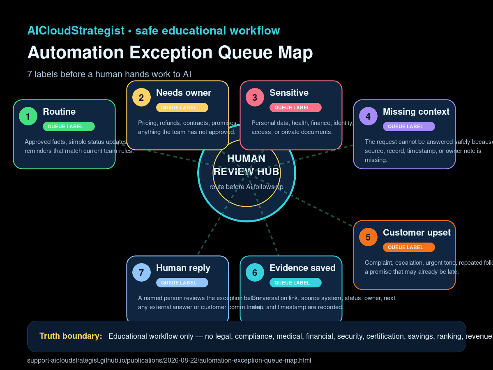

Morning publication · Safe automation operations
Automation Exception Queue Map: 7 labels before a human hands work to AI
A safe educational map for teams to separate routine work from owner-review items before automated follow-up creates confusion.

Practical labels
- Routine: Approved facts, simple status updates, and low-risk reminders that match current team rules.
- Needs owner: Pricing, refunds, contracts, promises, unusual requests, or anything the team has not approved.
- Sensitive: Personal data, health, finance, identity, credentials, OTPs, access, or private documents.
- Missing context: The request cannot be answered safely because source, record, timestamp, or owner note is missing.
- Customer upset: Complaint, escalation, urgent tone, repeated follow-up, or a promise that may already be late.
- Evidence saved: Conversation link, source system, status, owner, next step, and timestamp are recorded.
- Human reply: A named person reviews the exception before any external answer or customer commitment.
Use this map before allowing AI-assisted tools to draft or send follow-up. The safer path is to identify exceptions first, save evidence, and route uncertain items to a named human owner.
Educational workflow only — no legal, compliance, medical, financial, security, certification, savings, ranking, revenue, booking, or guaranteed-performance advice.